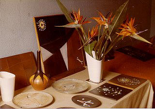
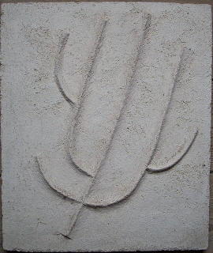

Grands carreaux décors fleurs dimensions 28 cm sur 28 cm

Carreau décors poisson
15 cm sur 15 cm

Carreau décors cosmique

Assiette circulaire Diamètre 18 cm

Cendrier représentant
le château de Cagnes
Diam:16 cm sur 14 cm

Cendriers inspiré des motifs des grottes de Lascaux
Dimensions: 16 cm sur 14 cm

Mini exposition dans l'appartement
de Micheline Baud à Nice (1975)

Table basse avec carreaux unis
Dimensions: 90 cm sur 45 cm

Panneau noir
formés de carreaux de 15 cm daté de 1972"

Plaque avec décor en relief